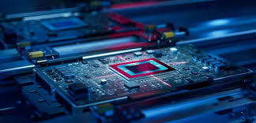
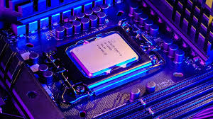
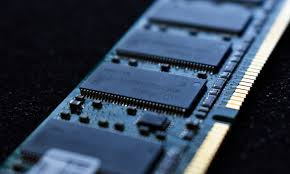
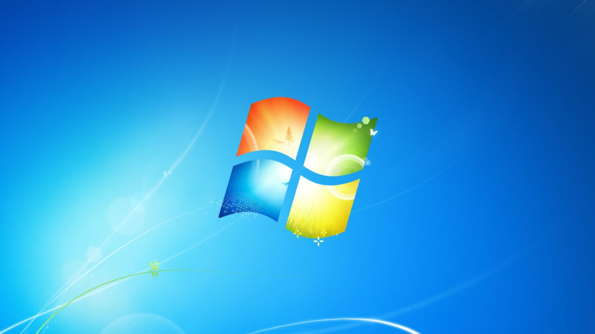
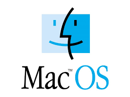

O que é o Hardware?
Como funciona nos computadores?
O hardware é a parte física do computador, formada por todos os componentes que podemos ver e tocar. Ele inclui peças internas, como processador, memória RAM e armazenamento, além de dispositivos externos, como teclado, mouse e monitor. Cada componente do hardware tem uma função específica, trabalhando junto para que o computador execute programas e processe informações. Entender o hardware ajuda a identificar problemas, melhorar o desempenho e saber como o computador realmente funciona por dentro.
Componentes do Computador

A placa-mãe é o componente central do computador, responsável por conectar e integrar todas as outras peças do sistema. É nela que ficam instalados o processador, a memória RAM, o armazenamento e diversos outros dispositivos que fazem o computador funcionar.
O processador é o cérebro do computador, responsável por executar todas as tarefas e comandos enviados pelo sistema. Quanto mais rápido ele for, melhor será o desempenho geral da máquina.
A memória RAM armazena temporariamente os dados que estão sendo usados no momento, permitindo um funcionamento rápido e eficiente dos programas.Sistema Operacional?
Como funciona um sistema operacional?
O sistema operacional é o software principal do computador, responsável por controlar todos os seus recursos e permitir que o usuário interaja com a máquina. Ele gerencia o processador, a memória, osarquivos, os programas e os dispositivos conectados, organizando tudo para que funcione de forma eficiente. Sem um sistema operacional, o computador não conseguiria executar aplicações nem responder aos comandos do usuário. Entender o sistema operacional ajuda a usar melhor o computador, resolver problemas comuns e compreender como o software coordena o funcionamento de todas as partes do sistema.
Quatro exemplos de SOs
Windows:

O Windows é um dos sistemas operacionais mais utilizados no mundo e desempenha um papel essencial no ambiente de desenvolvimento. Ele funciona como a base que organiza os recursos do computador e permite que o usuário interaja com as ferramentas e programas instalados. No curso técnico, o Windows é estudado para que o aluno compreenda como o sistema gerencia processos, memória, arquivos e dispositivos, garantindo que tudo funcione de forma integrada. Dominar o Windows facilita a instalação de softwares de programação, a configuração de ambientes de trabalho e a resolução de problemas comuns, tornando o estudante mais preparado para atuar em tarefas de manutenção e desenvolvimento.
Linux:
O Linux é um dos sistemas operacionais mais importantes no universo da tecnologia, especialmente no ambiente de desenvolvimento e servidores. Ele oferece um ambiente robusto, seguro e altamente personalizável, permitindo que o usuário controle detalhadamente cada parte do sistema. No curso técnico, o Linux é estudado para que o aluno compreenda sua estrutura baseada em permissões, gerenciamento de processos, organização de diretórios e utilização do terminal. Essa prática ajuda a entender como o sistema opera internamente e como administrar recursos de forma eficiente. Dominar o Linux facilita a configuração de ambientes de programação, o uso de ferramentas avançadas e a resolução de problemas, preparando o estudante para atuar em diversas áreas da tecnologia.
MacOs:

O macOS é o sistema operacional desenvolvido pela Apple e conhecido por sua interface elegante, estabilidade e alto desempenho. Projetado para funcionar de maneira integrada ao hardware dos computadores da marca, ele oferece um ambiente seguro e otimizado para tarefas profissionais e criativas. No curso técnico, o macOS é estudado para que o aluno compreenda sua estrutura, o gerenciamento de arquivos e processos, além das ferramentas nativas usadas para desenvolvimento e administração do sistema. Seu ecossistema eficiente facilita a instalação de IDEs, a utilização de comandos no terminal e o controle de recursos avançados. Dominar o macOS permite ao estudante atuar com maior produtividade em áreas como programação, design e edição, ampliando suas possibilidades dentro do ambiente tecnológico.
Android:
O Android é um sistema operacional desenvolvido pelo Google para dispositivos móveis, como smartphones, tablets, TVs e até relógios inteligentes. Ele funciona como a “base” do aparelho, gerenciando os aplicativos, os recursos de hardware e a interface que o usuário utiliza no dia a dia. Por ser um sistema aberto, o Android permite que fabricantes e desenvolvedores personalizem sua aparência, adicionem recursos e criem uma grande variedade de aplicativos. Isso faz com que ele seja um dos sistemas mais utilizados no mundo. Com seu funcionamento flexível, atualizações constantes e integração com serviços do Google, o Android oferece uma experiência prática, moderna e acessível para diferentes tipos de usuários.
Sistema de Arquivos
Qual a funcionalidade do sistema de arquivos?
O sistema de arquivos é o componente responsável por organizar e controlar como os dados são armazenados e acessados em um dispositivo. Ele determina a forma como pastas e arquivos são criados, nomeados e guardados, garantindo que o computador consiga localizar, ler e salvar informações corretamente. Além disso, o sistema de arquivos gerencia o espaço disponível, evita conflitos de armazenamento e mantém a estrutura organizada para que tudo funcione sem erros. Sem um sistema de arquivos, os dados ficariam desordenados e o computador não teria como identificar onde cada informação está. Entender como ele funciona ajuda a compreender melhor o processo de armazenamento, aumentar a segurança dos dados e resolver problemas relacionados a arquivos e dispositivos.
Como funciona de forma ilustrativa:
Modo Texto CMD:
Como funciona?
O CMD, ou Prompt de Comando do Windows, funciona inteiramente em modo texto, permitindo que o usuário interaja com o computador digitando comandos em vez de usar janelas e ícones. Nesse ambiente, cada instrução é interpretada pelo sistema e convertida em ações, como criar pastas, mover arquivos, testar conexões ou executar programas. O CMD trabalha com linhas de comando: você digita um texto, pressiona Enter e o resultado aparece logo abaixo, também em texto. Essa forma de interação é mais leve e direta, pois não usa elementos gráficos e depende apenas de caracteres para exibir informações. Por isso, o CMD é muito útil para diagnósticos, automações e tarefas avançadas, permitindo acessar recursos do sistema que às vezes não estão disponíveis na interface gráfica.
Modo Gráfico Explorer:
Como o modo gráfico funciona
O Windows Explorer, também chamado de File Explorer, funciona em modo gráfico, oferecendo uma interface visual para que o usuário possa navegar pelos arquivos e pastas do computador de maneira intuitiva. Em vez de digitar comandos, o usuário interage por meio de janelas, ícones, botões e menus, tudo exibido usando pixels e elementos visuais. O Explorer permite abrir, mover, copiar e excluir arquivos com cliques, arrastar itens com o mouse e visualizar conteúdos de forma organizada em listas, grades ou miniaturas. Ele utiliza recursos da placa de vídeo e da interface gráfica do sistema para desenhar cada parte da janela, tornando a experiência mais simples, rápida e acessível, especialmente para quem não está acostumado a usar linha de comando. O modo gráfico do Explorer facilita o uso do computador, pois transforma operações complexas em ações visuais e fáceis de entender.
Software de escritório
O que são?
Um software de escritório é um tipo de programa criado para ajudar nas tarefas do dia a dia em ambientes profissionais, escolares ou pessoais. Esses softwares facilitam atividades como escrever documentos, criar planilhas, montar apresentações, organizar informações e editar textos. Eles fazem parte de um conjunto chamado suite de escritório, que reúne várias ferramentas usadas para produtividade. Entre os mais conhecidos estão Microsoft Office, Google Workspace e LibreOffice. Esse tipo de software permite que o usuário produza trabalhos com mais rapidez, organização e qualidade, sendo essencial em empresas, escolas e até no uso doméstico.
Os Software mais conhecidos e de fácil acesso são: Microsoft Word, Microsoft Excel e Microsoft PowerPoint. Abaixo você verá como cada um funciona ⬇ ⬇ ⬇
Microsoft Word
Microsft Word:
O Microsoft Word é um programa usado para criar e editar textos de forma simples e prática. Com ele, é possível escrever documentos, ajustar fontes, inserir imagens, montar tabelas e deixar tudo organizado do jeito que você quiser. É muito utilizado em escolas e trabalhos por facilitar a produção de atividades, relatórios e outros conteúdos com rapidez e qualidade.
Microsft Excel
Microsft Excel:

O Microsoft Excel é um programa de planilhas usado para organizar dados e fazer cálculos de forma rápida. Com ele, podemos criar tabelas, aplicar fórmulas, gerar gráficos e analisar informações de um jeito simples e visual. É muito útil em trabalhos escolares, tarefas do dia a dia e atividades profissionais que precisam de organização e números.
Microsft PowerPoint
Microsft PowerPoint:
O Microsoft PowerPoint é um programa usado para criar apresentações de forma prática e visual. Com ele, podemos montar slides com textos, imagens, vídeos, gráficos e animações, deixando o conteúdo mais claro e interessante. É muito útil para trabalhos escolares, apresentações profissionais e qualquer situação em que precisamos explicar uma ideia de um jeito organizado e fácil de entender.